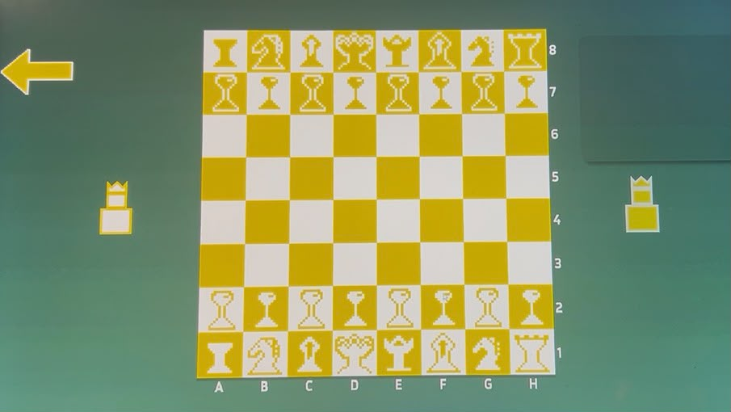

O XADREZ CLÁSSICO EM ESTILO PIXEL ART

O Nous Chess 2D é um projeto independente desenvolvido na engine Unity 6, combinando a mecânica completa do xadrez com um visual único em pixel art nas cores verde e amarelo.
O jogo possui validação precisa de movimentos em matriz $8 \times 8$, controle de xeques, xeque-mate e histórico de partidas dinâmico.
Este projeto foi feito para um evento de setembro amarelo no Via de acesso para os jovens aprendizes se conscientizarem sobre o cuidado mental e se divertir aprendendo a jogar xadrez.
Roque Curto/Longo, En Passant, Promoção de Peões e Detecção de Xeque-Mate.
Registro completo das jogadas em notação algébrica no painel lateral do jogo.
Design em pixel art exclusivo com peças amarelas e brancas, animação de pulso e menus fluídos.
CRIADO POR: Yann Fidelis
ENGINE: Unity 6 (C#)
ARTE & UI: Custom Pixel Art & TextMeshPro
TECNOLOGIAS USADAS: C#, Unity UI System, Canvas Scaler, Input System
Baixe a versão completa para PC (Windows) e comece a jogar agora mesmo!
💾 BAIXAR AGORA (.ZIP) * Compatível com Windows 10 e 11. Basta extrair e rodar o .exe